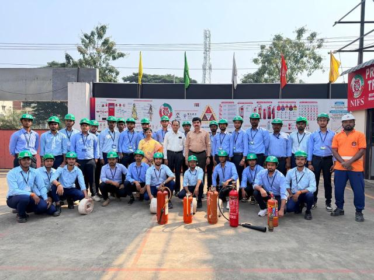

Department Profile
Fire and Industrial Safety Department
The Department of Fire and Industrial Safety was established on 18th September, 2025 by the esteemed personalities Sri. Dr. Gangadhara Rao Kancharla, I/c Vice Chancellor, Smt. Prof. K. Ratna Shiela Mani garu, Rector [I/C], Sri Prof. G. Simhachalam garu, Registrar [I/C], and Sri Suneel Mahanty, C.E.O. and Chairman, offering Bachelor Degrees in Fire and Industrial Safety on a self-supporting mode.
The department inaugurated two regular and on-campus courses: B.Sc. (Hons.) in Fire and Industrial Safety (4 years) and B.Sc. in Fire and Industrial Safety (3 years) for the academic year 2025-2026.
The Department has been technically collaborated with the National Institute of Fire and Safety (NIFS), one of the leading institutes in fire and industrial safety in India, operating 85+ centres across the country.

The department was established to meet industrial needs and enhance student employability through a standard academic framework, skill training under the National Skill Development Corporation (NSDC), On the Job Training (OJT), practical exposure, and internships.
The department provides many teaching-learning facilities such as sophisticated classrooms, fully equipped digital classrooms, and an advanced fire and industrial safety laboratory. The courses offered can enlighten the learner to achieve global standards and excellence in fire and industrial safety.
Aims and Goals
The objective of the B.Sc. (Hons.) in Fire and Industrial Safety is to equip students with comprehensive knowledge and practical skills in fire prevention, industrial safety management, risk assessment, disaster management, and environmental safety.
The programs aim to:
- Develop competent professionals capable of identifying, evaluating, and controlling workplace hazards.
- Provide in-depth understanding of fire science, safety engineering, occupational health, and emergency response systems.
- Train students in the application of national and international safety standards, codes, and regulations.
- Build leadership and decision-making skills to handle fire incidents, industrial accidents, and disaster situations effectively.
- Promote a culture of safety, sustainability, and environmental responsibility in industries and organisations.
- Prepare graduates for careers in oil & gas, manufacturing, construction, aviation, chemical, and public safety sectors, as well as for higher studies and research.